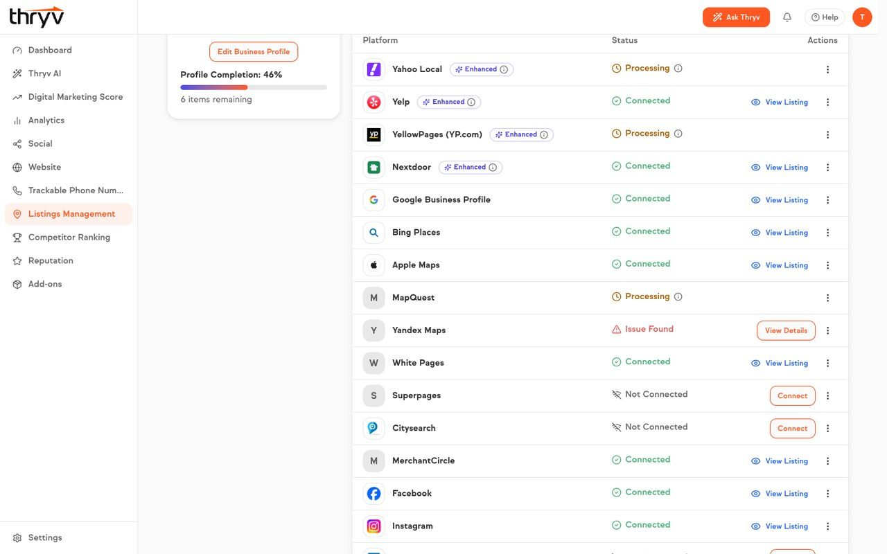
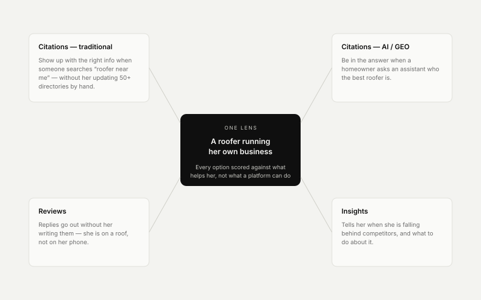
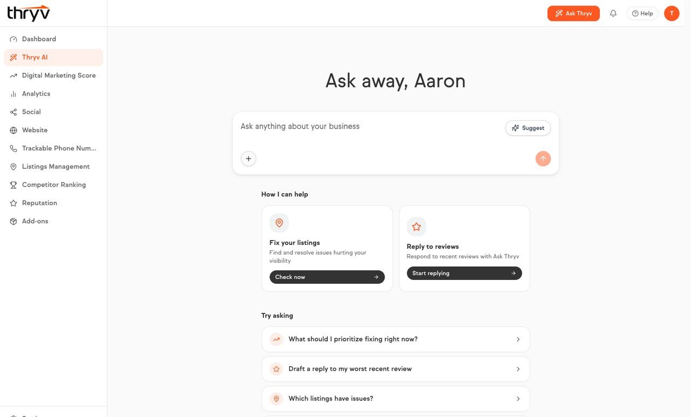
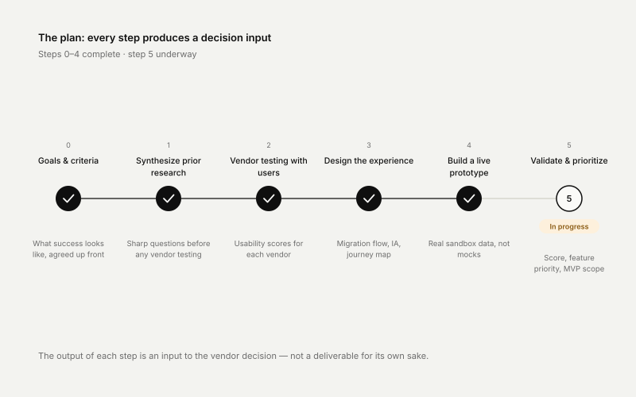
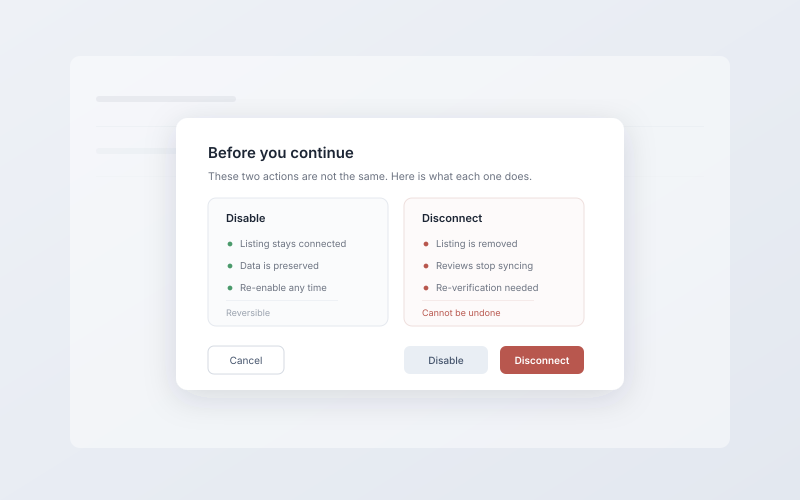

One UX,
two possible backends
A platform-wide listings vendor migration on a fixed deadline. I could not choose the vendor — so I designed the decision so that the user experience could not lose.

Product screens, captured from demo accounts.
A two-year wind-down, and a user experience to protect
The platform had to replace its listings vendor on a fixed deadline, with a new partner fully live by 2028. I led the design and research work to make sure the switch protected the experience instead of quietly degrading it.
Four problems sat inside one decision: which vendor to move to and on what integration model; how the choice lands on existing users; what becomes possible on a new backend; and how to get PMs, dev leads, marketing and support aligned on the answer.
The SMB lens
Our persona is a roofer running her own business. Every option got scored against what helps her, not what a platform can technically do.
The real capability
What the business is actually buying is AI search presence — being in the answer, not just listed in a directory.
The risk nobody had measured
None of the baseline studies covered reconnecting listings to a new vendor. That flow did not exist yet.

Design and research lead on the evaluation
I own the design and research track on the proof of concept, working alongside one other designer to keep research and prototyping moving in parallel. The vendor decision itself is not mine — so I focused on the decisions that were.
Consolidated the baseline
I pulled three prior usability studies — all A-grade — into a single bar any new vendor has to clear. Before this, “don’t make it worse” had no number attached to it.
Specified an abstraction layer
The vendor choice was not mine to make, so I made a different one: design the frontend so it does not care who wins. Our patterns on top, vendor fields underneath.
Put an AI criterion in the scorecard
I argued interaction model into the evaluation: does the AI hand her a decision to approve, or a blank box to fill? That became a requirement rather than a nice-to-have.
Built a live prototype
Wired to a real sandbox API rather than mocks, so every status and score on screen is live data — and the evaluation argues from behaviour, not comps.


One UX, two possible backends
The integration surfaced three design problems at once: the vendor API returned fields that did not map cleanly onto our patterns; what the API could return shaped what I could show — partial states, async generation delays, variable confidence in AI output; and SMBs had to trust that AI-generated content represented them accurately.
That abstraction layer is my call, and it is why this decision cannot produce a bad user experience. Whichever vendor wins, the frontend does not get rewritten.
Three findings that shaped the design
A mental-model mismatch
Users expect to mark a closed period inside their open hours, not split a day into two blocks. It showed up in two separate studies.
Terminology is fragile
Existing platform vocabulary already causes hesitation. Third-party terminology would compound it.
Consequences must be legible
Users could not reliably tell what disabling something would do versus disconnecting it, before committing.

Status, honestly
The vendor decision lands at the end of 2026 and the new partner goes live in 2028, so there is no adoption outcome to show yet. Here is what is already true either way.